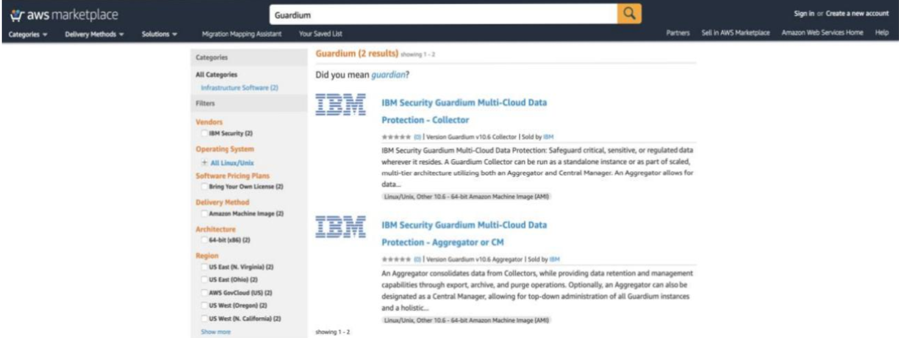
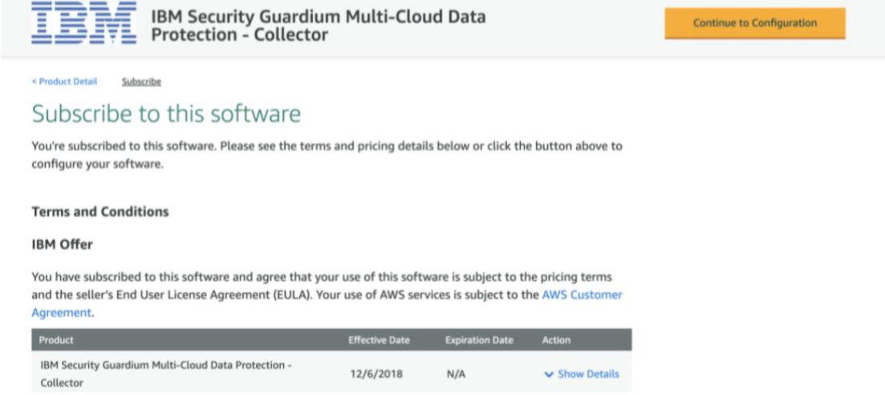
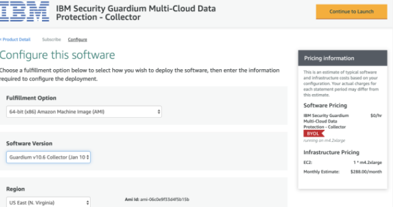
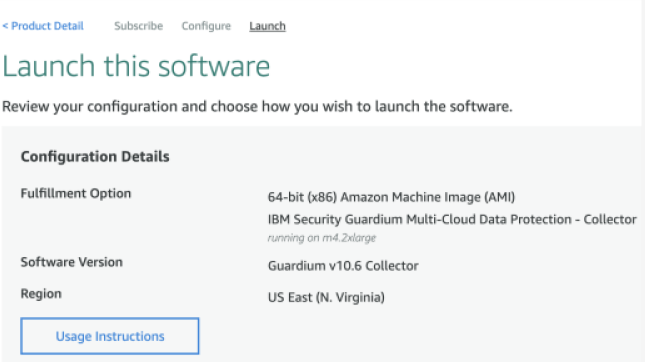
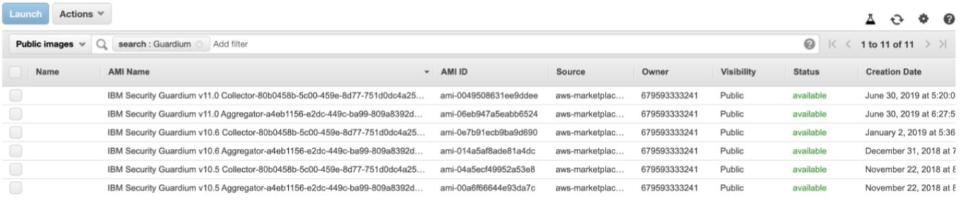
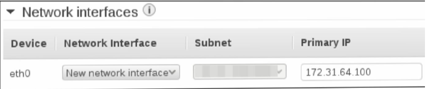
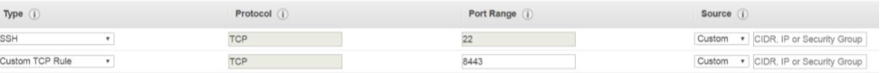

As instâncias do Guardium podem ser implantadas na AWS de duas maneiras. você pode implantar do mercado ou de Amazon Machine Images específicas do Guardium (AMIs).
Método 1 1. Navegue até o AWS MARKETPLACE 2. Procura por Guardium;  3. Clique no IBM Security Guardium Collector ou no IBM Security Guardium Oferta do agregador; 4. Clique em Continue to Subscribe para assinar a oferta; 5. Você será solicitado a fazer login em sua conta da AWS, caso ainda não tenha feito login; 6. Revise os termos e condições; 7. Clique em Continuar para configuração;  8. Revise a opção de atendimento e clique em Continuar para iniciar;  9. Clique em Instruções de uso para revisar as instruções;  10.Escolha iniciar o software a partir do site ou EC2; Observação: você também pode optar por copiar a oferta do Guardium para seu serviço AWS Catálogo para gerenciar os recursos de nuvem da sua organização 11.Escolha um tipo de instância EC2; 12.Defina as configurações de VPC. 13.Defina as configurações de sub-rede. Observação: por padrão, um endereço IP público é associado à instância em Implantação. Para evitar isso, modifique as configurações de sub-rede no EC2 para desativar as configurações de atribuição automática de IP 14. Defina as configurações do seu grupo de segurança; 15.Defina as configurações do par de chaves; Observação: o acesso às instâncias do Guardium é limitado ao uso de um par de chaves do EC2. Autenticação baseada em senha e comandos relacionados não são suportados, incluindo os seguintes comandos: > armazenar senha de expiração cli > mostrar cli de expiração de senha 16.Clique em Iniciar para iniciar sua instância do Guardium.
Método 2
1. Faça login na página do console AWS EC2;
2. Em Imagens, clique em AMIs;
3. Ao lado da barra de pesquisa, selecione Imagens públicas e procure por “Guardium”;

4. Selecione entre as AMIs Collector ou Aggregator Guardium;
5. Clique em Iniciar para iniciar o assistente de criação de instância;
- Criando a Instância do Guardium
1. Na página Escolher um tipo de instância, selecione o tamanho da instância Finalidade geral
m4.2xlarge (a Guardium recomenda um mínimo de 4 vCPUs e 24 GB de RAM).
Clique em Avançar para configurar os detalhes da instância;
2. Ao lado de rede, selecione um VPC;
3. Ao lado de sub-rede, selecione uma sub-rede na lista;
4. Em Interfaces de rede, insira um endereço IP no endereço IP primário;
5. Clique em Next para ir para a página Storage Configuration;
6. Revise a configuração de Armazenamento e clique em Avançar;
7. Adicione um nome de tag para a instância e clique em Avançar para configurar a Segurança
Grupo;
- Configurando os Grupos de Segurança:
1. Na página de configuração de segurança, clique em Atribuir um grupo de segurança;
2. Ao lado de Nome do Grupo de Segurança, insira um nome para o Grupo de Segurança;
3. Ao lado de Description, escreva uma breve descrição para o Security Group;
4. O Guardium usa a porta 8443 para se conectar à IU da web e a porta 22 para se conectar
o CLI. Crie estas 2 regras:

a. Tipo: SSH, Protocolo: TCP, Intervalo de portas: 22, Origem: Personalizado
b. Tipo: TCP personalizado, Protocolo: TCP, Intervalo de portas: 8443, Origem: Personalizado
Observação: a Guardium recomenda que as regras do grupo de segurança permitam o acesso de
apenas endereços IP conhecidos.

5. Clique em Revisar e Iniciar;
6. Revise as definições de configuração e clique em Iniciar;
7. Selecione o par de chaves secretas na lista suspensa e clique em Iniciar
Instâncias;
Configuração e configurações
Depois que a instância do Guardium é implantada, as etapas abaixo descrevem como se conectar a
a instância e como definir as configurações de rede;
- Conectando-se à instância
1. Conecte-se à GUI do Guardium: em um navegador, acesse a URL: https://